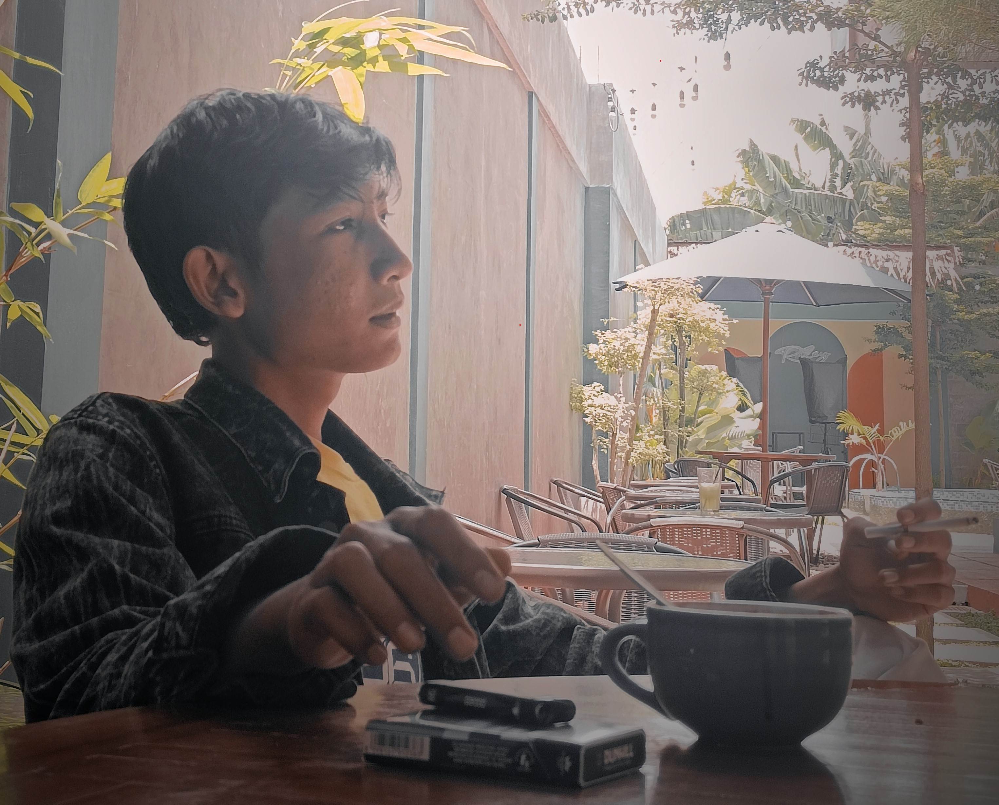

Profil
- Nama:
- AHMAD 'IYASYA
- Tanggal Lahir:
- 18 Maret 2003
- Email:
- ahiyasya@gmail.com
- Alamat:
- Jl. Desa Kertomulyo No.4/1, Kertomulyo, Kec. Trangkil, Kabupaten Pati, Jawa Tengah 59153
- Tentang Saya:
- Saya adalah anak pertama dari 3 bersaudara, kesibukan saya sekarang adalah setiap senin - sabtu saya bekerja sebagai buruh pabrik di PT. MURIA PANGAN JAYA MAKMUR, dan untuk hari minggunya saya masih menuntut ilmu di kampus STT Pati dan hobi saya dalam bidang olahraga adalah bulu tangkis,untuk hobi yang santai saya sering membuat sebuah puisi
Pendidikan
- SD Negri Kertomulyo kec.Trangkil Kab.Pati
- MTs Shirothul Ulum Kertomulyo kec.Trangkil Kab.Pati
- SMK Tunas Harapan Pati
- Jurusan APL (Analisis Pengujuan Laboratorium) Kec.Bapoh Kab.Pati
- Melanjutkan Kuliah di STT Pati
- Jurusan TI (Teknik Informatika) Kec.Bapoh Kab.Pati
Karir
- Bekerja di PT. Muria Pangan Jaya Makmur
- Bagian: QC (Quality Control), Operator WTP dan WWTP
Hasil karya puisi